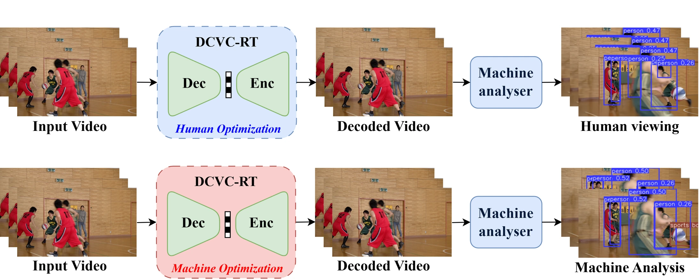
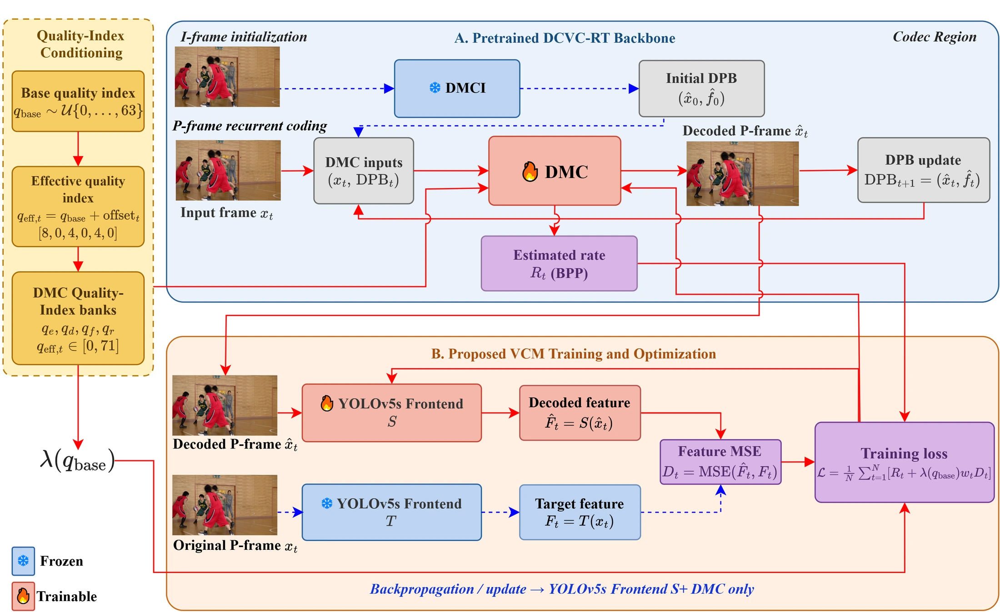
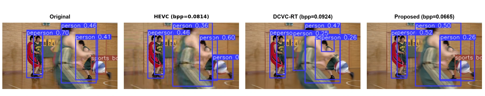
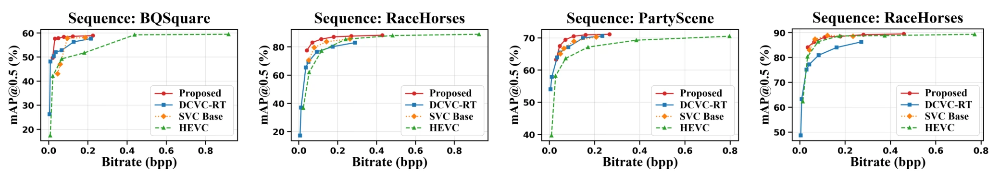

Task-oriented adaptation
Detector-feature matching adapts the inter-frame coding path without changing the codec inference topology.
Task-Oriented Variable-Rate DCVC-RT for Object Detection
RIVF · 2026
1 VNU University of Engineering and Technology, Vietnam National University, Hanoi, Vietnam
* Corresponding author: Minh DoNgoc.
Adapting a practical variable-rate codec to preserve information for object detection.
This work adapts DCVC-RT, a practical single-model variable-rate neural video codec, to object detection. Detector-feature supervision jointly adapts the inter-frame coding network and a cloned YOLOv5s frontend, while the intra-frame codec and teacher branch remain frozen. A quality-conditioned rate-task objective retains the native variable-rate mechanism and recurrent coding structure. Fine-tuning requires no detection annotations and adds no semantic bitstream. Evaluation uses actual coded-stream rates on eight SFU-HW-Objects-v1 sequences, with content-dependent gains in rate-detection performance and essentially unchanged codec throughput.
Detector-feature matching adapts the inter-frame coding path without changing the codec inference topology.
A quality-conditioned rate-task objective preserves DCVC-RT’s module-bank-based variable-rate control.
Detection accuracy and codec throughput are evaluated using coded streams on eight Class-C and Class-D sequences.
A frozen YOLOv5s teacher provides feature supervision to a cloned detector frontend and the DCVC-RT inter-frame DMC. The intra-frame codec remains fixed. The training objective balances rate and task fidelity using a base quality index while retaining frame-dependent effective quality indices.


Averaged over eight Class-C and Class-D sequences, DCVC-RT-VCM reports HEVC-anchored BD-rates of -62.7% for mAP@0.5 and -64.6% for mAP@[0.5:0.95], compared with -54.9% and -58.1% for pretrained DCVC-RT. Gains depend on the sequence: the adapted model improves some contents while the pretrained codec remains more favorable on others. Codec-only throughput remains essentially unchanged.


@inproceedings{2026rivfdcvcrtvcm,
title = {Task-Oriented Variable-Rate {DCVC-RT} for Object Detection},
author = {BuiDinh, Dang and VuXuan, Truong and PhamThe, Duy and NguyenThanh, An and HoangVan, Xiem and DoNgoc, Minh},
booktitle = {RIVF},
year = {2026}
}